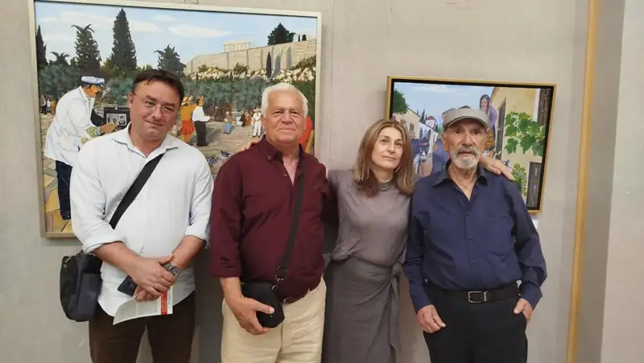
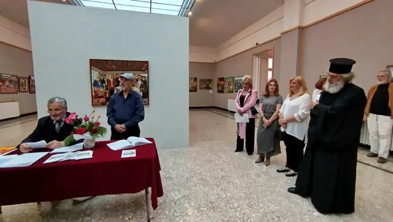
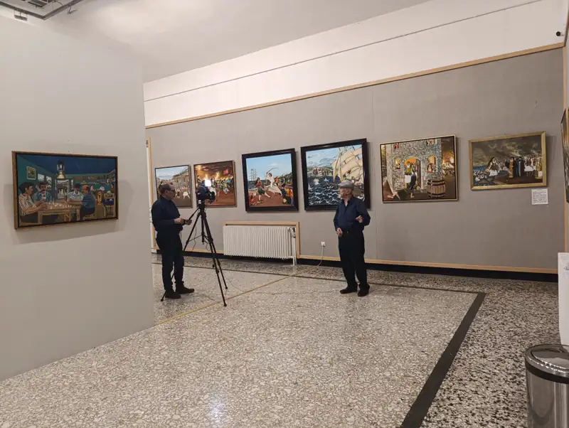
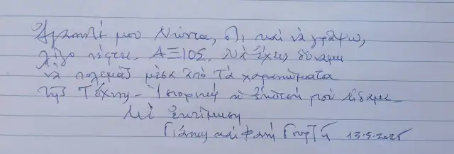
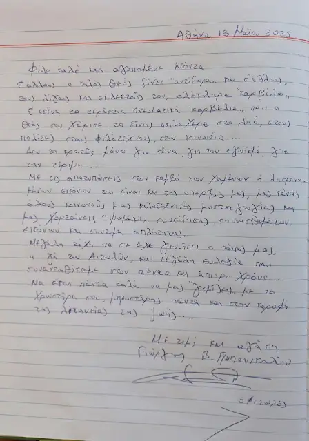
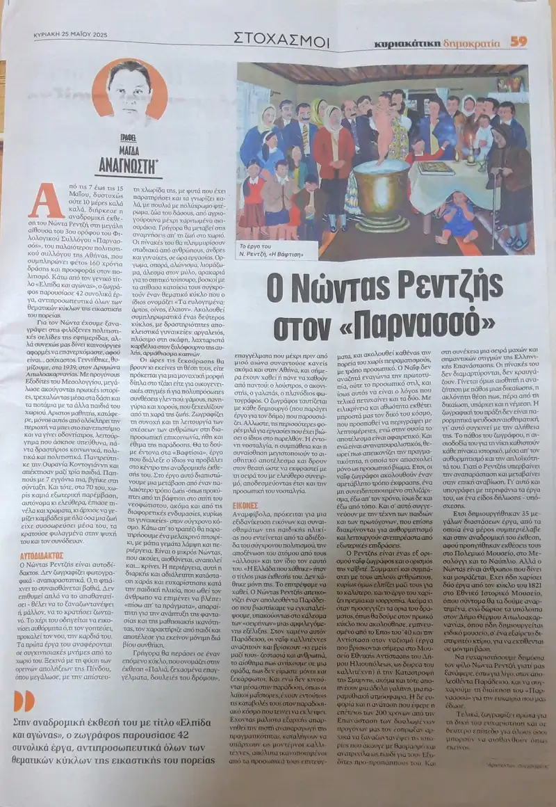

ΕΚΘΕΣΗ: ΦΙΛΟΛΟΓΙΚΟΣ ΣΥΛΛΟΓΟΣ ΠΑΡΝΑΣΣΟΣ - ΕΛΠΙΔΑ ΚΑΙ ΑΓΩΝΑΣ

Ζώντας οι περισσότεροι μέσα στις πολύβουες πόλεις, που κατακλύζονται από τους βάρβαρους ήχους τις καθημερινότητας, η επίσκεψη σε αυτή την έκθεση του λαϊκού ζωγράφου Νώντα Ρεντζή είναι μια βόλτα πίσω στο χρόνο. Τότε που οι γειτονιές ξεχείλιζαν από ζωή και ακούγονταν οι φωνές των περιπλανώμενων επαγγελματιών, που διαλαλούσαν τα εμπορεύματα ή τις υπηρεσίες τους και τα χαρούμενα ξεφωνητά των παιδιών που έπαιζαν αμέριμνα. Παρουσιάζει τους ξωμάχους και επαγγελματίες των προηγούμενων γενεών, αδιαχώριστους από την Ελληνική φύση και την αγάπη τους για την ζωή. Επίσης, φιγούρες και στιγμές μιας ξεχασμένης νοσταλγικής καθημερινότητας… Παράλληλα εκθέτει έργα που υμνούν τους αγώνες των προγόνων μας για την Ελευθερία.
Έτσι οι επισκέπτες της έκθεσης θα μπορέσουν να ζωντανέψουν ξεχασμένες μνήμες και οι νεότεροι από αυτούς που δεν είχαν μέχρι τώρα επαφή με αυτό το παρελθόν, θα μπορέσουν να ζωντανέψουν ξεχασμένες ιστορήσεις γερόντων πριν αυτές βυθιστούν μέσα στη λήθη.
Την έκθεση προλόγησε ο τ. Πρεσβευτής κ. Γιάννης Ε. Λάκατζης. Χαιρετισμό απηύθυναν οι τ. Υπουργοί Μανώλης Χαντζινάκης και Αλέκος Παπαδόπουλος. Παρεβρέθηκαν ο Πατέρας Μιχαήλ, τα μέλη του Προεδρείου του Φ.Σ. Παρνασσού, ο Αντιδήμαρχος Ηλιούπολης κ. Ιωάννης Πούλος, ο Καθηγητής της Οδοντιατρικής ΕΚΠΑ κ. Μιχάλης Λουκίδης, οι ομ. Καθηγητές του ΕΚΠΑ Τουτουντζάκης Νίκος, Κουτρούμπας Δημήτριος, ο κ. Βαγγέλης Γραββάνης Πρόεδρος συλλόγου Κροκυλιωτών "Ο Μακρυγιάννης", η Αδαμαντίνη Κουμιώτη συγγραφέας, ο Πρόεδρος της Ένωσης Καλλιτεχνών και Λογοτεχνών Ηλιούπολης κ. Στέλιος Μαρούλης, ο Πρόεδρος της ΠΕΛΤΕ Γεώργιος Λένης, το Προεδρείο του Ροταριανού Ομίλου Ηλιούπολης, οι δημοσιογράφοι Πάνος Σιόμπολος, ο Πάνος Σαββόπουλος, ο Γεώργιος Καρυώτακης, ο Άρης Ρουπίνας, ο Γιώργος Καραμπελιάς και πλήθος φιλότεχνων.



@george.kalliakmanis Αληθινή είναι η τέχνη που μας προσφέρει εκείνο το άρωμα ανάμνησης, το οποίο μας ταξιδεύει στις πιο όμορφες εποχές… 🎨 📍 Με ιδιαίτερη χαρά και τιμή παραβρέθηκα στα εγκαίνια της Έκθεση Ζωγραφικής «Ελπίδα & Αγώνας» του σπουδαίο Νώντα Ρεντζή (που κατάγεται από τον Δρυμώνα Τριχωνίδας), η οποία διεξάγεται στον 3ο όροφο του Φιλολογικού Συλλόγου «Παρνασσός», στην Πλατεία Καρύτση. #art #artist ♬ πρωτότυπος ήχος - george.kalliakmanis


